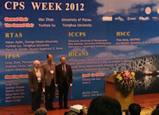
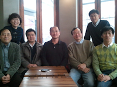
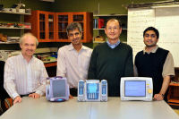
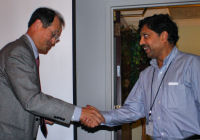
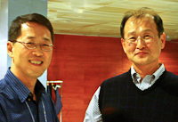
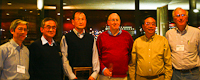
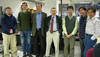

Insup Lee named Deans' Distinguished Visiting Professor, January 2019

Best Paper Award at ISORC 2018, June 2018

Best Paper Award at RTSS 2012, December 2012

Best Paper Award at RTSS 2012, December 2012

ICCPS Chairs Insup Lee and Oleg Sokolsky with CPS Week 2012 General Chair Wei Zhao, April 2012

With former RTG members in Seoul, Feb 12, 2012

PRECISE Team

Insup Lee and Raj Rajkumar, RTSS'09 Banquet, Washington, DC

IEEE TCRTS Outstanding Technical Achievement and Leadership Award

IEEE TCRTS Outstanding Technical Achievement and Leadership Award

Research Team in 2008
